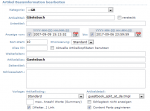
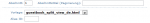
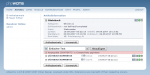

|
||
Gästebuch Template
mit getrennter Eingabemaske
Bitte laden Sie als Erstes die nachfolgende Datei runter und entpacken Sie diese auf Ihrem Rechner. Laden Sie dann bitte erst einmal die Dateien auf Ihren Webspace / Server hoch.
Download
Die Zip Datei enthält folgende Dateien:
Vorlage für den Artikel:
template/inc_cntpart/Articlesummary/article/guestbook_split_at_de.tmpl
Vorlagen für den Content Part Gästebuch:
Vorlage der Eingabemaske für neue Gästebucheinträge:
template/inc_cntpart/guestbook/guestbook_split_entry_de.html
Vorlage der Ansicht der Gästebucheinträge:
template/inc_cntpart/guestbook/guestbook_split_view_de.html
Jeder der Vorlagen liegt auch als englische Version in der ZIP Datei vor. Sie ist daran zu erkennen, dass die Datei die Endung EN trägt.
Einrichtung
|  |
| Bild 1 - Artikel Template |
|  |
| Bild 2 - Content Part 1 |
| Bild 3 - Content Part 2 |
|  |
| Bild 4 - Content Part Übersicht |
Gehen Sie nun wie folgt vor, um die Vorlagen in ein bestehendes Gästebuch einzubinden.
1. Gehen Sie auf die Artikelbasisinformationen des Gästebuch Artikels und wählen Sie dort unter "Artikeldetail" das Template (in dem Fall für Deutsch) guestbook_split_at_de.tmpl aus. Setzen Sie dann den Haken bei "Content Parts Paginieren". Klicken Sie dann auf "Speichern", um die Änderungen zu übernehmen (Bild 1).
2. Bearbeiten Sie den vorhandenen Content Part "Gästebuch". Tragen Sie bei Abschnitt "1" ein und wählen Sie bei Vorlage "guestbook_split_view_de" aus. Klicken Sie dann auf "Speichern", um die Änderungen zu übernehmen (Bild 2).
3. Erstellen Sie einen zweiten Content Part "Gästebuch". Tragen Sie hier bei Abschnitt "2" ein und wählen Sie bei Vorlage "Guestbook_split_entry_de" aus. Ausserdem tragen sie unter "Alias ID" die ID des Hauptgästebuches ein, in diesem Falle ist es "2". Klicken Sie dann auf "Speichern", um die Änderungen zu übernehmen (Bild 3).
Nachdem Sie die Änderungen gespeichert haben, sollten Sie eine Übersicht haben wie auf Bild 4.
Hinweis: Da beim Schreiben eines Eintrages ein Cookie gesetzt wird, sehen Sie nach dem ersten eigenen Eintrag keine Eingabemaske mehr, da diese durch das Cookie ausgeblendet wird.
Für Fragen oder Hilfestellung nutzen Sie bitte das Kontaktformular der Seite.
| Artikel erstellt: Mittwoch, 26. September 2007 |         |
Letzte Änderung: Donnerstag, 27. September 2007 |
| Wenn Sie einen Fehler entdecken eine Ergänzung oder Frage haben benutzen Sie bitte folgendes . Hat Ihnen oder Ihrem Kunden diese Docu weitergeholfen ? Dann würde ich mich freuen wenn Sie das Projekt unterstützen würden. Bitte nutzen Sie dafür diesen PayPal Link. Jeder Betrag ist möglich und hilft der Weiterentwicklung und Aktualisierung dieser Dokumentation. |
||